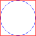

FlowPort_bHollow flow port (used downstream) |

|
Information
This information is part of the Modelica Standard Library maintained by the Modelica Association.
Same as FlowPort, but icon allows to differentiate direction of flow.Parameters (1)
| medium |
Value: Type: Medium Description: Medium in the connector |
|---|
Components (1)
| medium |
Type: Medium Description: Medium in the connector |
|---|
Used in Components (2)
|
Modelica.Thermal.FluidHeatFlow.Interfaces Partial model of relative sensor without signal output |
|
|
Modelica.Thermal.FluidHeatFlow.BaseClasses Partial model of two port |